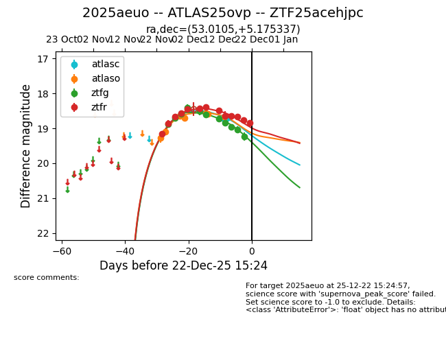
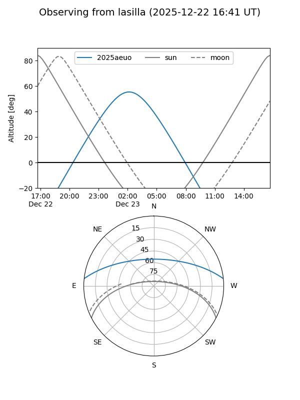
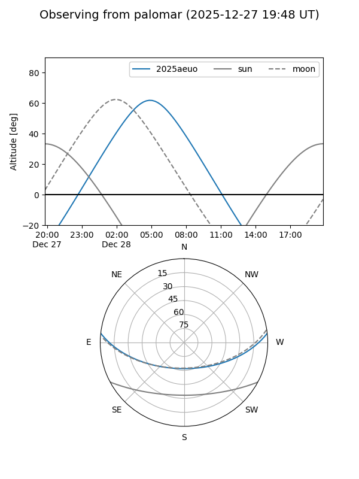
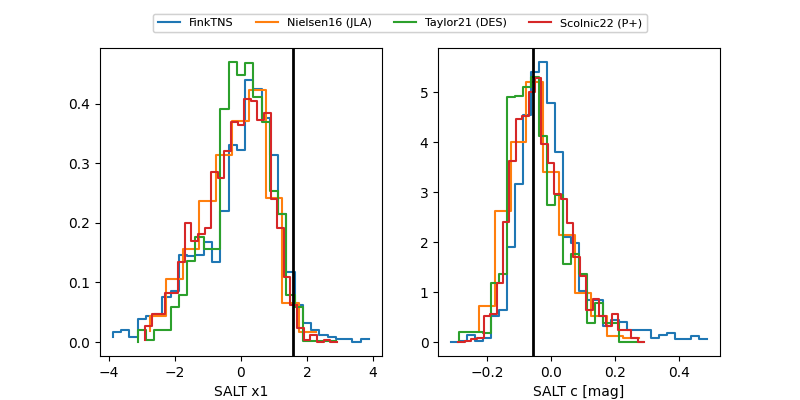

2025aeuo
Target 2025aeuo at 2025-12-20 06:04
Aliases and brokers:
FINK: fink-portal.org/ZTF25acehjpc
Lasair: lasair-ztf.lsst.ac.uk/objects/ZTF25acehjpc
ALeRCE: alerce.online/object/ZTF25acehjpc
TNS: wis-tns.org/object/2025aeuo
YSE: ziggy.ucolick.org/yse/transient_detail/2025aeuo
alt names
ZTF25acehjpc (ztf,fink_ztf)
2025aeuo (tns,yse)
ATLAS25ovp (atlas)
Coordinates:
equatorial (ra, dec) = 53.0105,+5.17534
equatorial (HMS+DMS) = 03:32:02.52,+05:10:31.21
galactic (l, b) = (179.2868,-39.52059)
Flags:
Photometry:
last atlasc=18.71, atlaso=18.66, ztfg=19.23, ztfr=18.76
2 atlasc, 7 atlaso, 11 ztfg, 12 ztfr detections
Lightcurve

Visibility


Additional plots
